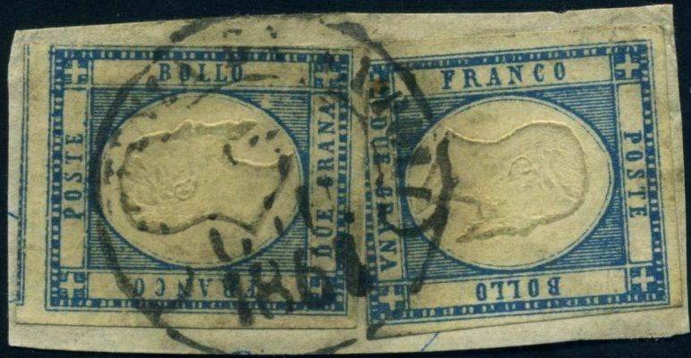
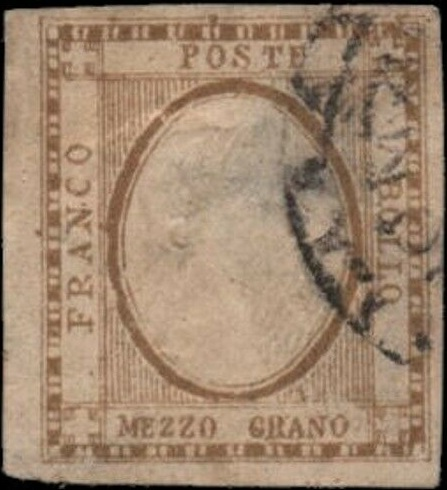
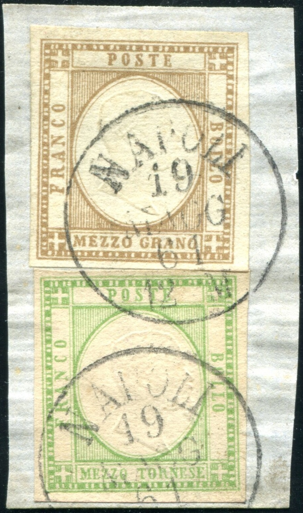
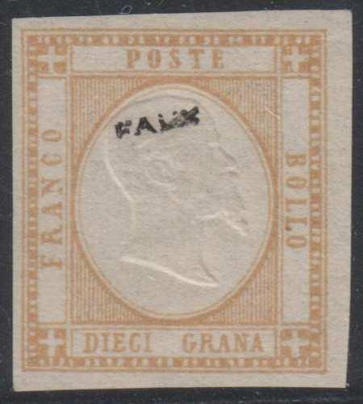

Return To Catalogue - Italy overview - Sardinia
Note: on my website many of the
pictures can not be seen! They are of course present in the
catalogue;
contact me if you want to purchase the catalogue.
The earliest Italian stamps did often only have the value written on it, the following table gives the meaning of the value inscription:
| 1/2 = Mezzo | 1 = Un | 2 = Due | 5 = Cinque |
| 10 = Dieci | 15 = Quindici | 20 = Venti | 25 = Venticinque |
| 30 = Trenta | 40 = Quaranta | 50 = Cinquanta | 60 = Sessanta |
1/2 (Mezzo) t green 1/2 (Mezzo) g brown 1 (Un) g black 2 (Due) g blue 5 (Cinque) g red 10 (Dieci) g orange 20 (Venti) g yellow 50 (Cinquanta) g grey (or blue)
Similar stamps were issued in Italy. Some of these stamps exist with inverted center.
Value of the stamps |
|||
vc = very common c = common * = not so common ** = uncommon |
*** = very uncommon R = rare RR = very rare RRR = extremely rare |
||
| Value | Unused | Used | Remarks |
| 1/2 t | ** | R | |
| 1/2 g | R | RR | |
| 1 g | R | *** | |
| 2 g | ** | ** | |
| 5 g | *** | R | |
| 10 g | *** | R | |
| 20 g | R | RR | |
| 50 g | R | RRR | |
Typical cancels:
I have my doubts about the following two stamps, the embossed center is inverted, forgeries?

A stamp of Sardinia with the same '1884' forged numeral cancel as
shown above

A highly suspicious Sicily cancel on a 10 g stamp

Forged cancel on genuine stamp

Highly suspicious stamp with "PARTENZA DA NAPOLI 3 GIU
1861" cancel, the same cancel exists on forgeries of Naples.
 
The words "DUE GRANA" are written much smaller than in
the genuine stamps in this forgery. The corner crosses are way
too large. Besides it two more forgeries with very large corner
crosses.


Forgeries made by the same forger? The lettering is completely
different from the genuine stamps. Many of them have the cancel
"NAPOLI 16 MAGG 61 12 M" or "NAPOLI 19 MAGG 61 12
M". This cancel is listed in the Serrane guide under the
1855 issue of Sardinia and is attributed to "I." of
Genoa, I presume it refers to the forger Imperato.
Here the same forgery, but now with a "Annulato" fancy
cancel and pasted on a piece of paper. This cancel was also used
on forgeries of Naples made by Oneglia.
Forgery of the 2 g with different lettering, made by the same
forger?

Here the "NAPOLI 19 MAGG 61 12 M" cancel on two genuine
stamps.
I know that Sperati also has made forgeries with inverted head. He bleached out the design of a genuine stamp, leaving the embossed center intact and then printed a new design, inverted, on top of it. In this way the experts were fooled; they tried to establish if the embossing was genuine (and it is in these forgeries!). Examples of these forgeries can be found at: http://www.seymourfamily.com/rfrajola/Sperati/speratiindex.htm :

(Sperati forgery, image obtained from Richard Frajola's website)


Front and backside of a Sperati reproduction
In the above Sperati forgeries, there is a small
break in the outer frameline, just above the 'S' of 'POSTE'.
There is also a break in the line below in front of the 'T' of
the same word. Finally, there is a break in the line just above
the front of the 'E' of 'DUE'. This forgery exists on letters.
Sperati also made forgeries of a 2 g black misprint (with the
same distinguishing characteristics as the 2 g blue Sperati
forgery).
Other forgery with "FAUX" (=forgery in French) overprint:

(Could these be Fournier forgeries?)
Page from a 'Fournier Album of Philatelic Forgeries' with forged
2 g, 5 g and 50 g stamps, also a cancel "NAPOLI 12 AGO 61 8
S" in a single circle that was probably used on these
forgeries.
Part of a Fournier Album.
A 5 gr Fournier forgery taken from a Fournier Album with a
"NAPOLI 12 AGO 61 8 S" cancel.

10 g black (wrong colour); probably a forgery


Other items I don't quite trust

Dubious item, printing quite blur, no embossing.
A 'reprint' made for the 'Salon der Philatelie' in Hamburg 1984
of the 1/2 t value
A number of postal forgeries exist (to deceive the post office). There is one postal forgery of the 5 g value, two of the 10 g value and one of the 20 g value. Example:

Postal forgery of the 5 G value.
(Postal forgery, image obtained from Lorenzo)
In the above postal forgeries of the 10 g, the crosses in the corners are not symmetrically. In the genuine 10 g stamp, there are 12 pairs of white dots at the bottom and at the top, 15 pairs of white dots at the left and 14 pairs at the right. This postal forgery has 13 pairs of dots at the bottom and 15 at the top. I've seen them with the cancel "NAPOLI AL PORTO" used in March 1862.

Most likely another postal forgery of the 10 g, together with a
genuine 5 g stamp.

I've been told that this is a postal forgery of the 20 g value. I
have no further information.

Genuine stamps(?) of the Neapolitan Provinces, but the envelope
is all forged made by Rodolfo Hensel
(under the false name Dario Balbi)


{kind=link}
{kind=link}
{kind=link}
{kind=link}
{kind=link}
{kind=link}
{kind=link}